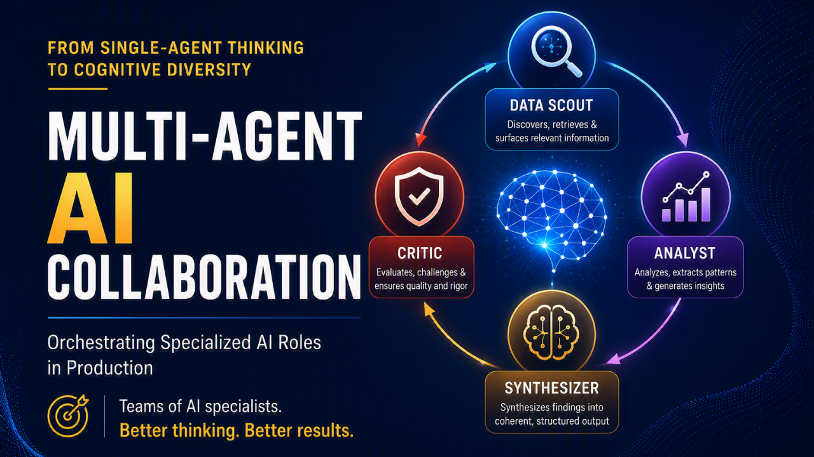

Multi-Agent AIWhy one agent isn't enough — and how to build a team of AI specialists that research, analyze, synthesize, and critique each other's work. With full observability via Langfuse.
Updated September 2026 with lessons from a conference talk on why one agent isn't enough.
The starting point was straightforward: 23 data sources, 40 specialized tools, one conversational interface. The sources span expression atlases, dependency screens, interaction networks, dose-response curves, ontologies, and literature — including public databases most researchers already use independently: DepMap, STRING, UniProt, PDB/AlphaFold, Open Targets, ChEMBL, GTEx, PubMed, Human Protein Atlas, Reactome, WikiPathways, ClinVar/gnomAD, Cellosaurus, cBioPortal, and NCATS Inxight. The platform work — connecting all of them through a single agent — took substantial effort and is genuinely useful.
But access is not the hard part. Reconciliation is.
When two datasets disagree about whether a gene is essential, retrieval hands you both results and stops. The researcher is still the only thing in the loop capable of resolving it. That ceiling becomes visible with questions like:
Each one requires holding competing interpretations simultaneously, weighing them, and being explicit about what would change the answer. That is not a retrieval task. It is a reasoning task with an adversarial component.
Live API or land it first? Every source gets one of two treatments. Sources with APIs that answer targeted per-entity queries — one protein, one structure, one compound — are called live at question time and stay current by definition. Sources where the useful unit is the full matrix are bulk-ingested as partitioned Parquet first. DepMap is the clean example: there is no "is this gene essential in that cancer subtype?" endpoint. The answer requires the complete CRISPR gene-effect matrix across approximately 1,100 cell lines, so it lands in a data lake before it is ever asked. Three ingestion schedules handle the rest — daily for fast-changing sources, weekly for ontology DAGs whose propagation would overrun a nightly window, monthly for sources that release approximately annually. One slow source that overruns its window should not delay every other source; schedule isolation is not optional.
When this system encountered those questions, two structural failure modes became clear — and neither was fixable by switching to a more capable model or adding more tools.
Capability dilution. One agent holding 40 tools becomes decent at everything and excellent at nothing. Tool selection becomes a tax on every question — the model spends reasoning budget deciding what to call rather than doing the work well. As the tool surface grows, the decision cost grows with it.
Self-consistency bias. An agent cannot meaningfully critique its own output. It has a single objective and already satisfied it. Asking "are you sure?" invites the same reasoning path to re-run and agree with itself. In scientific synthesis this is disqualifying: an unreviewed conclusion is a hypothesis, not a finding, and the reviewer cannot be the author.
The fundamental insight: Multi-agent systems aren't about splitting work for throughput — they're about introducing cognitive diversity. Different agents with different prompts, different model tiers, and different objectives that genuinely conflict with each other produce better outcomes than one agent thinking harder.
The system evolved into a four-role collaboration pattern, each role with a distinct objective and a deliberately different incentive structure. Not every query goes through the full pipeline — a lightweight classifier runs first and routes straightforward data lookups to a faster single-agent path, reserving the four-role pipeline for synthesis and reasoning tasks.
| Role | Model Tier | Why | Cost Impact |
|---|---|---|---|
| Data Scout | Sonnet (fast) | Tool selection is mechanical — doesn't need deep reasoning | Low (high volume, cheaper tier) |
| Analyst | Sonnet | Pattern recognition + code generation for visualizations | Medium |
| Synthesizer | Opus (frontier) | Resolving contradictions requires highest reasoning capability | High (but only one call) |
| Critic | Opus (frontier) | Adversarial reasoning must match synthesizer's capability | High (but catches costly errors) |
This tiered approach means the majority of tokens are processed by the cheaper Sonnet model (scout + analyst), while frontier-tier reasoning is reserved for the two steps that need it most. Per-role tracing in Langfuse makes this cost breakdown visible and lets you verify that each tier is actually earning its place.
To make the architecture concrete, consider a question that a single agent handles poorly: "Across these cancer subtypes, which dependency is the most tractable therapeutic target — and what argues against it?"
The second half — "and what argues against it?" — is what makes this a multi-agent problem. A single agent can answer the first half. Only an adversarial architecture reliably answers the second, because something has to be incentivized to look for the counter-argument.
| Role | What It Contributed | Why It Mattered |
|---|---|---|
| Scout | Retrieved dependency scores, expression profiles, and canonical identifiers across subtypes — including results that fail to replicate, returned without pre-filtering. | Coverage without pre-filtering. The inconvenient data still reached the table. |
| Analyst | Scored effect sizes per subtype, flagged which separations were statistically meaningful versus noise, and quantified how much apparent signal came from a single cell-line panel. | Turns "these numbers differ" into "this difference is real, that one isn't." |
| Synthesizer | Ranked candidates and resolved the disagreement between dependency and expression evidence instead of reporting both. Attached explicit confidence to each finding and stated what evidence would change the ranking. | A decision, not a data dump — with its reasoning exposed. |
| Critic | Reviewed against the raw retrieved data, not just the report. Challenged whether confidence was justified by sample size, and surfaced a replication conflict in a second source the Scout had retrieved but the Synthesizer had not emphasized. | The independent check. Triggers revision when it finds one. |
The structural difference: a single agent answers the first half of that question. Only an adversarial architecture reliably answers the second half — "and what argues against it?" — because something has to be incentivized to look.
# Simplified multi-agent orchestration
import asyncio
from langfuse import observe
class ResearchOrchestrator:
def __init__(self):
self.analyst = Agent(model="sonnet", tools=ANALYSIS_TOOLS, system_prompt=ANALYST_PROMPT)
self.synthesizer = Agent(model="opus", tools=[], system_prompt=SYNTH_PROMPT)
self.critic = Agent(model="opus", tools=[], system_prompt=CRITIC_PROMPT)
def _new_scout(self):
"""Fresh scout per task — agents carry state, can't share concurrently."""
return Agent(model="sonnet", tools=SCOUT_TOOLS, system_prompt=SCOUT_PROMPT)
@observe(name="multi-agent-research")
async def research(self, query: str) -> ResearchReport:
# Phase 1: Parallel data gathering (fan-out)
# Strands Agent.__call__ is synchronous; use invoke_async() for await
# Each scout gets its own instance to avoid shared-state corruption
scout_results = await asyncio.gather(
self._new_scout().invoke_async(f"Find primary data: {query}"),
self._new_scout().invoke_async(f"Find ontology context: {query}"),
self._new_scout().invoke_async(f"Find contradicting evidence: {query}")
)
# Phase 2: Analysis (sequential — needs scout output)
analysis = await self.analyst.invoke_async(
f"Analyze these findings:\n{scout_results}"
)
# Phase 3: Synthesis
report = await self.synthesizer.invoke_async(
f"Synthesize into a coherent report:\n{analysis}"
)
# Phase 4: Adversarial critique
critique = await self.critic.invoke_async(
f"Find flaws in this report:\n{report}"
)
# Phase 5: Revision (if critique found issues)
if critique.has_issues:
report = await self.synthesizer.invoke_async(
f"Revise based on critique:\n{report}\n\nCritique:\n{critique}"
)
return report
With 4 agent roles making 6–15 LLM calls per user query, you need tracing. Without it, debugging "why did the agent give a wrong answer?" is impossible. Langfuse gives you:
# Langfuse integration pattern (SDK v3)
from langfuse import observe, get_client
@observe(name="multi-agent-research")
async def research(query: str):
# Trace metadata attaches to the current span automatically
langfuse = get_client()
langfuse.update_current_trace(
metadata={"query_type": classify_query(query)},
tags=["multi-agent", "research"]
)
@observe(name="scout-phase")
async def scout_phase():
return await asyncio.gather(
run_scout("primary", query),
run_scout("ontology", query),
run_scout("contradictions", query)
)
@observe(name="analyst-phase")
async def analyst_phase(data):
return await analyst(data)
# Each phase gets its own Langfuse span
scout_data = await scout_phase()
analysis = await analyst_phase(scout_data)
# ... synthesis and critique traced similarly
# Score the output for quality monitoring
langfuse.score_current_trace(
name="user-satisfaction",
value=1.0, # Updated later via user feedback webhook
)
The most valuable addition was the Critic agent. Its prompt is explicitly adversarial:
CRITIC_PROMPT = """You are a rigorous scientific reviewer. Your job is to Find Flaws.
For each claim in the report:
1. Is it supported by the evidence provided?
2. Are there alternative interpretations the report ignores?
3. Is the confidence appropriate, or overstated?
4. What critical data is Missing that would change the conclusion?
Be critical. A report that passes your review should be publishable."""
There is a non-obvious design decision here: the Critic receives the raw retrieved data, not only the Synthesizer's report. A critic that reads just the report can check internal consistency — it cannot check whether the report is actually grounded in the evidence the Scout retrieved. Building that ground-truth link explicitly is what makes this a review rather than a consistency check.
In practice, the Critic triggers a revision loop in approximately 23% of research-tier queries (11 of 47 recorded). A representative case: a Synthesizer once proposed a target ranked first on dependency evidence, reported with high confidence. The Critic objected that the supporting effect was carried by a small number of lines from a single cell-line panel, and that a second source in the Scout's own retrieval showed the effect failing to replicate. The revised report demoted the candidate, surfaced the replication conflict explicitly, and named the experiment that would settle it.
The 77% of queries where the Critic does not trigger a revision also have value: they add confidence that the report is solid — which researchers notice and appreciate.
Counter-intuitive economics: adding an expensive frontier-tier Critic reduces total cost to the researcher. A wrong answer requires a re-run plus the researcher's time to detect it. Catching the error once in the pipeline is cheaper than discovering it in the analysis — even if the argument is harder to quantify precisely than it sounds.
A system built for efficiency converges. It reconciles sources into the consensus view and delivers it faster. That is genuinely useful — and it is structurally incapable of producing a novel hypothesis, because the mainstream answer is the objective.
The Critic inverts this. Once a role is explicitly rewarded for finding fault — and one of its four tasks is to surface refuting evidence — disagreement between sources stops being an error to smooth over and becomes the most interesting output of the run.
Three things this surfaces that retrieval alone cannot:
Persisting disagreements matters as much as surfacing them. A conflict found in one query that gets written to the knowledge graph is queryable by every future session that touches the same target. The system builds memory of what is contested, not just what is known.
A single-agent system answers questions and forgets them. The finding from Monday's query has no bearing on Thursday's query about the same target unless someone explicitly re-introduces the context. Multi-agent systems create the same problem unless there is a shared memory layer that carries knowledge forward across sessions.
Two layers address this. A knowledge graph accumulates structured relationships — gene essentiality across cancer types, pathway memberships, compound-target associations — queryable by any future agent call. Contradictions are first-class: a disagreement between two sources is stored as a conflict node, not averaged away, so the system knows what is contested rather than only what is known. Amazon Bedrock AgentCore Memory handles conversation context across sessions: both the fast single-agent path and the full multi-agent pipeline read prior context on session entry, so the agent knows what the researcher explored before, what evidence was contested, and what questions were left open.
The combined effect is that the system becomes more useful the longer it is used. Each query enriches both layers. This is not the property of a retrieval tool — it is the property of a research partner.
For a deeper look at how to build cross-session memory for agents, see Cross-Session Agent Memory. For the failure mode where agent memory begins lying to itself, see When Your Agent's Memory Starts Lying.
The multi-agent system isn't just logical separation — it's physical separation on Kubernetes. Each role runs as its own Deployment with its own resource profile:
# deployment-data-scout.yaml (excerpt)
spec:
replicas: 2 # High throughput, parallel queries
containers:
- resources:
requests:
memory: "512Mi" # Lightweight — just tool calls
cpu: "250m"
# deployment-synthesizer.yaml (excerpt)
spec:
replicas: 1 # One at a time, deep reasoning
containers:
- resources:
requests:
memory: "1Gi" # Larger context window handling
cpu: "500m"
This lets you scale each role independently. Data Scouts scale out for throughput. Synthesizer stays at 1 replica to bound concurrent synthesis — a single pod serializes cross-user requests; size the concurrency semaphore to match your throughput target and expect 429s beyond it. The Critic can be temporarily scaled to 0 in low-priority environments to save cost, but requires a feature flag in the orchestrator to skip the stage — scaling to 0 without one causes connection failures.
One operational trap: a fresh Scout instance must be created per task. Agents carry conversational state, and sharing one instance across concurrent queries corrupts it. This is not obvious until you hit it in production.
Run a single agent first, and split only once you can name the failure mode. Splitting is justified only when you can point at where thinking harder stopped helping and thinking differently would. Before that point you are buying latency, cost, and operational complexity with no demonstrated return.
Four agents with the same prompt and the same goal is one agent with four times the bill. The value comes entirely from objectives that genuinely conflict: breadth versus precision, synthesis versus refutation. If the incentives do not conflict, the architecture is waste.
Getting a model to resolve contradictions rather than list them took the most iteration of anything in this system. What worked: require an explicit confidence score per finding, then weight the synthesis by those scores. Without that instruction, the model produces a tidy summary of the disagreement and leaves the decision to the human — which defeats the purpose.
Per-role cost, latency, and revision-rate data is what tells you whether a role is contributing or just adding time. We keep four roles because four survived that test — not because four looked right on an architecture diagram. If a role is not reducing revision rate or catching errors, remove it.
The transferable idea: If your AI never disagrees with itself, it will only ever tell you what the field already believes.
The next step for this class of system is not a bigger chatbot. It is a governed, traceable research partner that can reason across evidence, critique uncertainty, and suggest testable next steps.
Three properties define what that looks like in practice:
Key message: Multi-agent systems are most valuable when they make reasoning inspectable and science reviewable — not when they simply generate faster prose.
If you're building multi-agent systems or have questions about orchestrating AI roles in production, feel free to connect.